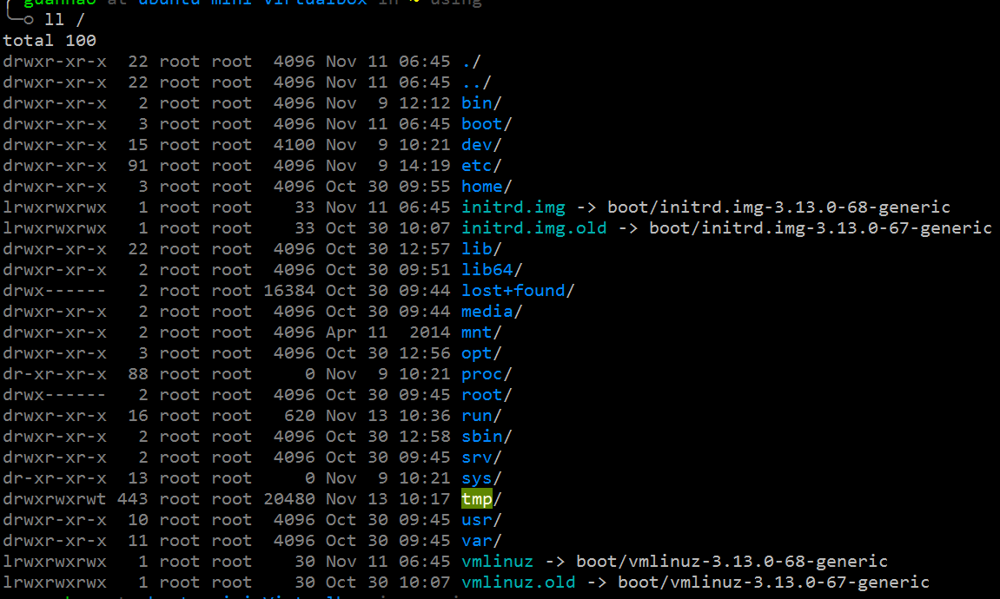
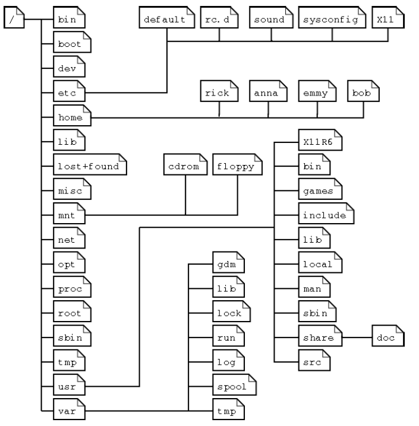

本节介绍Linux的文件系统，概览根目录/下的目录和文件，简要说明它们分别是干什么的。
打开Ubuntu终端，输入
$ ll /
ll是ls -alF的别名，在~/.zsh_aliases里面定义，这个文件是之前配置OnceCLI时创建的文件，可以看到定义的其它的别名。这个命令以详细列表的形式列举了根目录/下面的文件夹。

注意到第一列表示的是文件或文件夹的属性字段，由10个字符组成：第一个字符d表示目录，l表示链接，-表示普通文件。后面9个字符分为三组，分别表示:所有者许可权、群组中其它所有者许可权，其余用户的许可权。许可权由rwx三个字母组成，r表示可读，w表示可写，x表示可执行，-表示无该权限。
关于ls的更多细节，参考: IBM Knowledge Center - 显示目录的内容。
目前需要关注的是根目录下面存放了哪些目录。根目录/下面的目录组织结构大概如下图所示，不同Linux发行版之间略有差异，但大体相同。

这即是所谓的Linux文件系统，根目录下面的目录各有用途，其大概说明如下表
| 目录 | 内容 |
|---|---|
| /bin | 可执行程序，由系统、管理员和普通用户共享 |
| /boot | 系统启动引导文件 |
| /dev | 外围设备文件 |
| /etc | 配置文件 |
| /home | 存放用户目录 |
| /initrd | 启动时的一些初始化操作 |
| /lib | 库文件 |
| /lost+found | 系统异常时保存的文件存放地方 |
| /mnt | 挂载外部文件系统 |
| /opt | 一些第三方(非开源)的授权软件 |
| /proc | 存储进程信息的虚拟文件系统 |
| /root | 超级用户的家目录 |
| /sbin | 系统和管理员独享的可执行程序 |
| /tmp | 存放临时文件，重启清空 |
| /usr | 用户相关的可执行程序、头文件和库文件 |
| /var | 存放日志文件和临时下载文件等 |
下面介绍几个接触比较多的目录。
/home使用ls /home可发现下面存储了一个和自己用户名相同的目录
$ ls /home
guanhao
这个目录就是我们在Ubuntu的文件管理器里默认打开的目录，或者说在终端启动时默认所在的目录，里面存放的都是用户自己的一些文件，所以称为家目录。启动一个终端，输入
$ cd /home/guanhao
会发现zsh的命令行提示符显示的当前目录并没有发生变化，也就是说/home/guanhao确实是自己的家目录。Ubuntu会默认在相应用户的文件夹，例如Downloads, Documents等等。~可以替代当前用户的家目录，比如使用
$ cd ~
可以在任何时候直接回到自己的家目录。zsh的命令行提示符会贴心地提示当前所在的目录。输入
$ ll ~
会发现除了在文件管理器里可以看到的文件夹之外，还存在一些文件或文件夹是以.开头的，这是Linux的隐藏文件夹或者隐藏文件。Linux把隐藏文件用开头的.表示，即.开头的文件或文件夹默认都是隐藏的。用户自定义的配置(如zsh,bash,tmux,vim等)通常会放在自己的家目录里面，而为了不干扰用户工作，通常会将这些配置文件设置为隐藏文件。所以配置文件又称为 dotfiles。
/etc另外一个比较重要的目录是/etc目录，下面存放的是程序的配置文件(全局)，例如
/etc/apt/sources.list: APT包管理器的软件源列表/etc/ssh/sshd_config: ssh-server的配置文件这些文件夹我们之前已经接触过，他们的作用就是存放配置文件。配置文件本质上是文本文件，文本文件中的内容设定了程序运行的选项，规定程序的运行方式等。当我们安装了新软件并且需要配置时，通常会修改/etc目录下面相应的配置文件。
/usr还有一个重要的目录是/usr，存放的是用户级别的相关文件，Linux将和系统层面以及管理员层面相关的可执行文件、头文件、库文件等放在了/bin,/sbin,/lib/等文件夹中，而将用户安装的程序、头文件、库文件通常归档到/usr目录下。打开终端，输入
$ which zsh
$ which python
会发现输出都表明zsh和python所在的目录都在/usr/bin/下面，而不是/bin或/sbin下面。
打开终端，输入
$ echo $PATH
/home/guanhao/bin:/usr/local/bin:/usr/local/sbin:/usr/local/bin:/usr/sbin:/usr/bin:/sbin:/bin:/usr/games:/usr/local/games
输出了一系列一系列bin或sbin目录。Linux执行指令时总是从$PATH中存储的路径里去搜索二进制程序，这和Windows的环境变量的机制是完全一致的。
要修改环境变量，比如将某个目录添加到$PATH，可以使用
$ export PATH=$PATH:/home/guanhao/anaconda/bin
添加了/home/guanhao/anaconda/bin到环境变量，注意之前还有$PATH:这一部分，表示将目录附加到原来的环境变量后面，而不是直接覆盖原有环境变量。环境变量的字符串使用:来分隔不同的路径，所以需要在$PATH后面加一个:。
但是上面的方式在下次注销后将会失效。要永久地修改环境变量，需要对配置文件.profile进行修改。输入
$ cat .profile
注意最后三行，表示若用户的目录存在bin目录，则将其添加到环境变量，修改的语法是直接对PATH进行赋值操作
PATH="$HOME/bin:$PATH"
注意使用到了另一个变量$HOME，表示自己的家目录，可以输入
$ cd $HOME
试试。
修改配置文件来达到修改环境变量的目的，可以使得设置的环境变量在重启机器后仍然生效。
建议:手动修改和维护环境变量是比较复杂的事情，如非必要，尽量不要手动修改环境变量！
这一节只详细介绍了常用的几个文件夹，事实上了解这几个文件夹的作用暂时已经足够，如需进一步了解Linux文件系统的更多细节，建议参考: Linux Directory Structure and Important Files Paths Explained。
阅读一下.profile的其余内容，理解一下其余的代码做了什么。阅读和理解代码是最好的学习方式!
在命令行里输入echo $SHELL查看输出，想一想$SHELL这个变量表示什么意思？Linux之中还存在其他类似的变量吗，找找看。